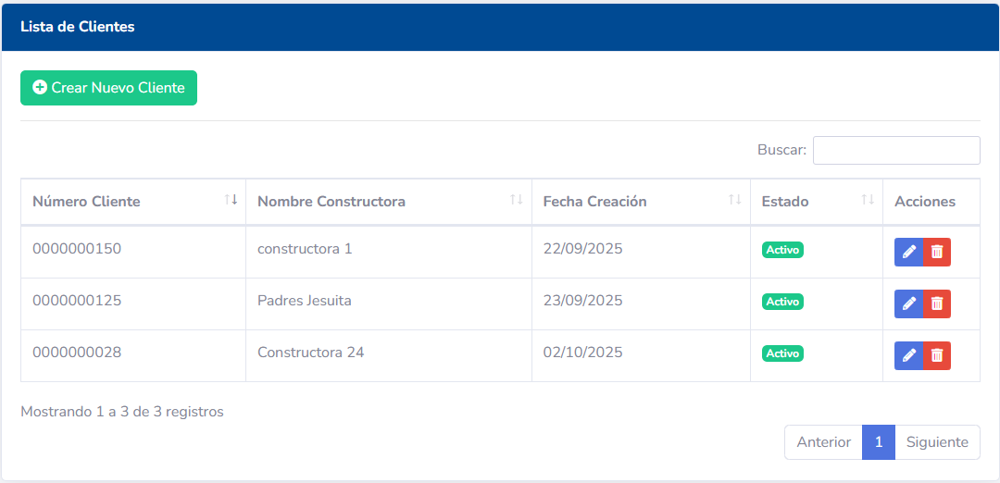
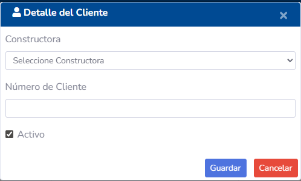
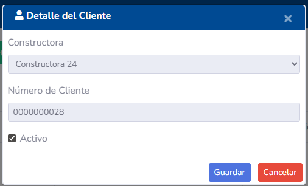
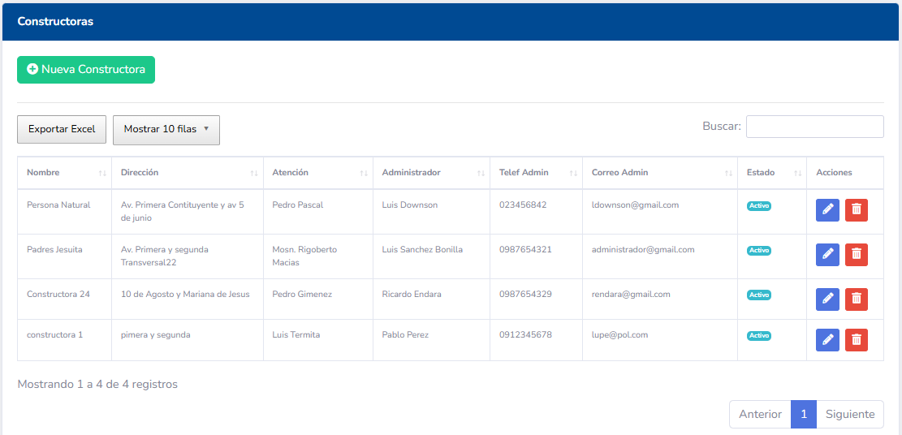
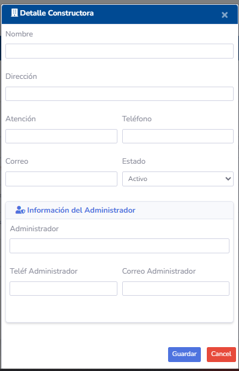
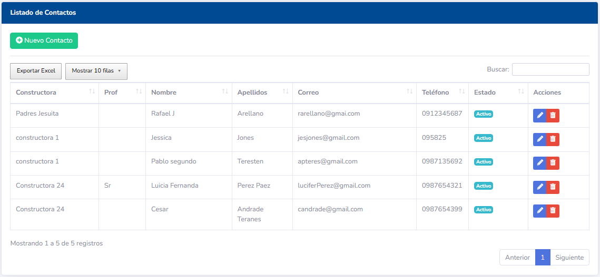
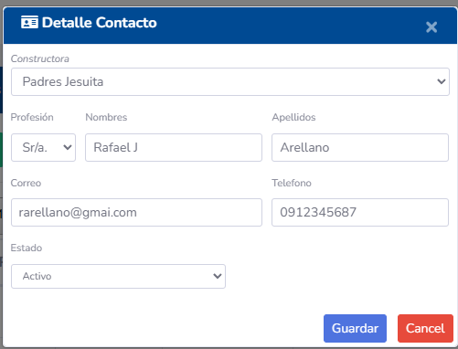

Manual de Usuario - Gestión de Entidades Principales (Clientes, Constructoras, Contactos)
1. Introducción
Este módulo es el pilar fundamental del sistema Tecmein, ya que permite gestionar la información de las entidades clave con las que interactúa la empresa: Clientes, Constructoras (o Proyectos) y Contactos. La correcta administración de estos datos es esencial para el seguimiento comercial, la facturación y la comunicación.
2. Acceso a los Módulos
Cada tipo de entidad principal suele tener su propia sección en el menú principal del sistema, por ejemplo: - Clientes - Constructoras / Proyectos - Contactos
3. Gestión de Clientes
La sección de Clientes permite administrar la información de las empresas o personas a las que Tecmein ofrece sus servicios.
3.1. Pantalla Principal (Listado de Clientes)

Muestra una tabla con todos los clientes registrados. Las columnas típicas incluyen: - RUC / Identificación: Número de identificación fiscal o personal. - Razón Social / Nombre: Nombre legal de la empresa o nombre completo de la persona. - Nombre Comercial: Nombre por el que es conocido el cliente (si aplica). - Teléfono: Número de contacto principal. - Correo Electrónico: Dirección de correo principal. - Dirección: Domicilio fiscal o principal. - Acciones: Botones para Editar, Ver Detalles, etc.
3.2. Crear un Nuevo Cliente

- Haga clic en el botón "Nuevo Cliente".
- Complete el formulario con la siguiente información:
- Tipo de Identificación: (Ej: RUC, Cédula, Pasaporte).
- Número de Identificación:
- Razón Social / Nombre:
- Nombre Comercial: (Opcional)
- Información de Contacto: Teléfono, Correo Electrónico.
- Dirección: Calle principal, número, referencia.
- Ubicación Geográfica: Provincia, Cantón, Parroquia (seleccionando de listas desplegables).
- Haga clic en "Guardar".
3.3. Editar un Cliente

- Localice el cliente en el listado y haga clic en el icono de Editar.
- Realice los cambios necesarios en el formulario.
- Haga clic en "Guardar" para actualizar la información.
3.4. Ver Detalles de Cliente
Haga clic en el icono de Ver Detalles para acceder a una vista completa del cliente, que puede incluir: - Toda la información general. - Un listado de las Constructoras/Proyectos asociados. - Un listado de los Contactos asociados a este cliente. - Historial de Visitas, Cotizaciones y Contratos relacionados.
4. Gestión de Constructoras / Proyectos
Esta sección permite administrar los proyectos específicos o las constructoras con las que trabaja un cliente. Una constructora o proyecto siempre estará asociado a un cliente principal.
4.1. Pantalla Principal (Listado de Constructoras/Proyectos)

Muestra una tabla con los proyectos o constructoras registrados. Las columnas típicas incluyen: - Nombre del Proyecto / Constructora: - Cliente Asociado: El cliente principal al que pertenece. - Dirección del Proyecto: Ubicación física del proyecto. - Descripción: Detalles adicionales del proyecto. - Acciones: Botones para Editar, Ver Detalles, etc.
4.2. Crear una Nueva Constructora / Proyecto

- Haga clic en el botón "Nueva Constructora / Proyecto".
- Complete el formulario:
- Nombre del Proyecto / Constructora:
- Cliente Asociado: Seleccione de una lista el cliente principal.
- Dirección del Proyecto:
- Descripción: (Opcional)
- Haga clic en "Guardar".
4.3. Editar una Constructora / Proyecto
- Localice el proyecto en el listado y haga clic en el icono de Editar.
- Realice los cambios y haga clic en "Guardar".
4.4. Ver Detalles de Constructora / Proyecto
Muestra toda la información del proyecto, incluyendo los contactos específicos asociados a este proyecto.
5. Gestión de Contactos
La sección de Contactos permite registrar a las personas clave dentro de las empresas clientes o constructoras.
5.1. Pantalla Principal (Listado de Contactos)

Muestra una tabla con todos los contactos registrados. Las columnas típicas incluyen: - Nombre Completo: - Cargo: Puesto que ocupa en la empresa. - Teléfono: Número de contacto. - Correo Electrónico: - Cliente Asociado: La empresa principal a la que pertenece el contacto. - Constructora / Proyecto Asociado: (Opcional) Si el contacto está ligado a un proyecto específico. - Acciones: Botones para Editar, Ver Detalles, etc.
5.2. Crear un Nuevo Contacto

- Haga clic en el botón "Nuevo Contacto".
- Complete el formulario:
- Nombre y Apellido:
- Cargo:
- Información de Contacto: Teléfono, Correo Electrónico.
- Cliente Asociado: Seleccione el cliente principal.
- Constructora / Proyecto Asociado: (Opcional) Si selecciona un cliente, se habilitará una lista para elegir un proyecto de ese cliente.
- Haga clic en "Guardar".
5.3. Editar un Contacto

- Localice el contacto en el listado y haga clic en el icono de Editar.
- Realice los cambios y haga clic en "Guardar".
5.4. Ver Detalles de Contacto
Muestra toda la información del contacto, incluyendo a qué cliente y/o proyecto está asociado.
6. Relaciones entre Entidades
Es importante entender cómo estas entidades se relacionan: - Un Cliente puede tener múltiples Constructoras/Proyectos. - Un Cliente puede tener múltiples Contactos. - Una Constructora/Proyecto siempre pertenece a un Cliente. - Un Contacto puede estar asociado a un Cliente o a una Constructora/Proyecto específica.
Estas relaciones son fundamentales para la trazabilidad y la organización de la información comercial.
7. Permisos y Roles
El acceso y las acciones permitidas en estos módulos están controlados por los roles y permisos del usuario: - Vendedor/Comercial: Generalmente puede crear, editar y ver clientes, constructoras y contactos. - Administrador: Acceso completo a todas las funcionalidades. - Consulta: Solo puede ver la información, sin capacidad de modificarla.